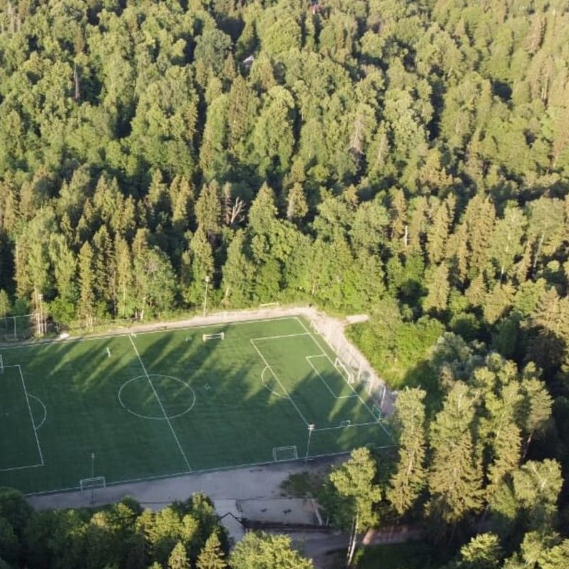

Спортивные сборы в лесу
Три футбольных стадиона, залы для единоборств, гимнастики и танцев, питание, коттедж для тренера и банный комплекс — на одной территории.
- 2 комплексамногофункциональные, под крышей9 500 м²
- Футболстадионы и 5 залов для мини-футбола3 стадиона
- Залыдля танцев, гимнастики и фехтования12 залов
- Площадкиволейбол, пляжный волейбол, баскетбол, теннис17 площадок
Футбол · единоборства · гимнастика · танцы · спартакиады и соревнования